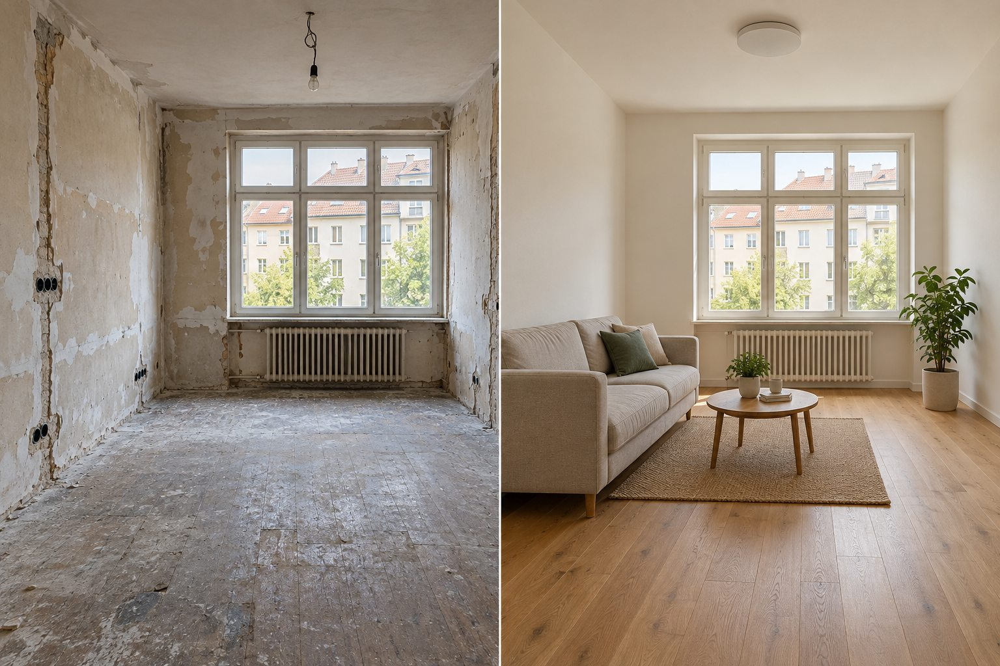
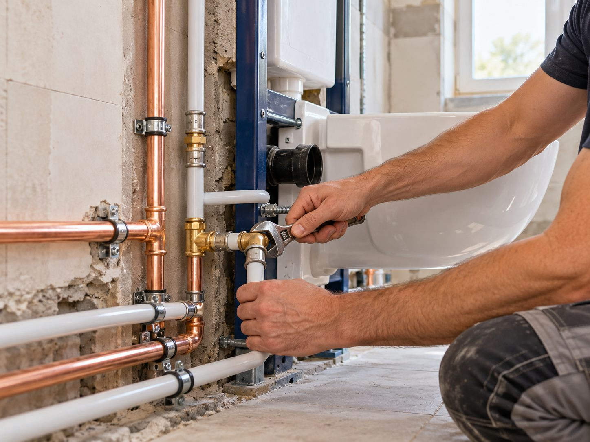
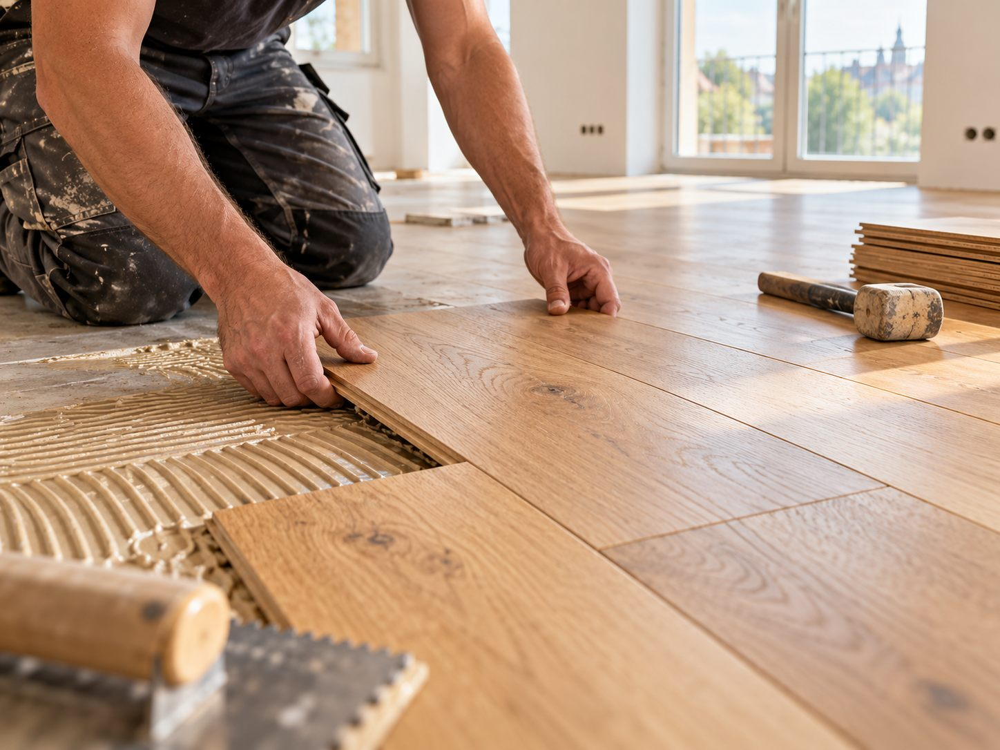

BLOG / Rady a tipy
Rady a tipy
Praktické průvodce pro plánování rekonstrukce bytu, koupelny a podlahy.

Rady a tipy ·
Rekonstrukce bytu v Praze: jak připravit zadání a poptávku
Seznam priorit, fotografie prostoru, rozsah prací a představa o termínu. Co připravit, aby první domluva měla konkrétní základ?
Číst článek
Rady a tipy ·
Rekonstrukce koupelny: co si ujasnit před zahájením prací
Sprcha nebo vana, úložné místo, zásuvky, obklady a návaznost prací. Připravte si rozhodnutí, která ovlivní podobu nové koupelny.
Číst článek
Rady a tipy ·
Jak vybrat podlahu do bytu: dřevo, vinyl nebo laminát?
Vzhled krytiny je jen jedna část rozhodnutí. Důležitý je způsob používání místnosti, stav podkladu i návaznost na dveře a další povrchy.
Číst článek